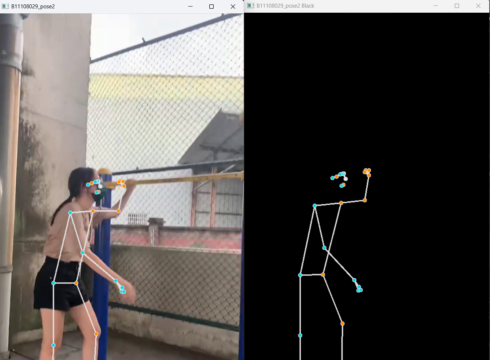
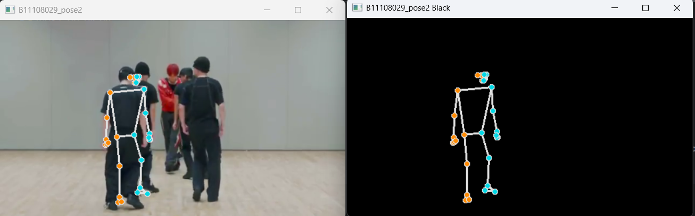
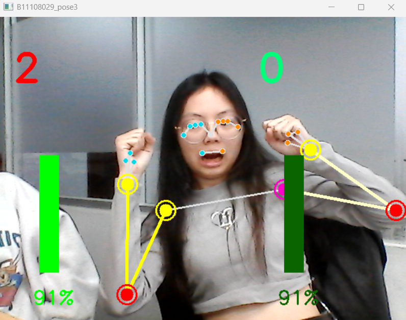

AI07X
Pose 姿勢偵測 × 動作互動分析
用 MediaPipe Pose 辨識人體骨架，並做手臂彎舉的角度與次數統計。
功能簡介
本專案整合 MediaPipe Pose 技術，建構出一套完整的人體姿勢偵測與互動分析系統，可應用於多種影像來源，包含：
即時攝影機輸入（AI071）：可應用於遠距教學或現場互動展示，即時呈現使用者的骨架動作。
自錄影片分析（AI072）：提供雙視窗比對畫面，用於體能檢測回顧或姿勢教學影片製作。
YouTube 串流姿勢辨識（AI073）：可應用於網路健身課程輔助，即時分析公開影片中的動作。
手臂彎舉角度與次數統計（AI074）：適用於健身動作計數、動作品質評估與視覺化回饋設計。
整體系統不僅支援骨架視覺化標記，也能透過角度判斷與條狀圖呈現，提供使用者清晰的訓練進度與動作表現回饋。此技術具備高度延伸性，未來可拓展至健身監控系統、個人運動教練平台、互動式課程開發等多元場景。
成果展示



程式碼片段
AI071｜即時攝影機姿勢偵測
import cv2
import mediapipe as mp
conn = mp.solutions.pose.POSE_CONNECTIONS
pose = mp.solutions.pose.Pose(min_detection_confidence=0.5, min_tracking_confidence=0.5)
mpd = mp.solutions.drawing_utils
spec = mp.solutions.drawing_styles.get_default_pose_landmarks_style()
cap = cv2.VideoCapture(0)
while cap.isOpened():
success, image = cap.read()
imgrgb = cv2.cvtColor(image, cv2.COLOR_BGR2RGB)
results = pose.process(imgrgb)
if results.pose_landmarks:
mpd.draw_landmarks(image, results.pose_landmarks, conn, spec)
cv2.imshow('M11508001_pose1', image)
if cv2.waitKey(5) & 0xFF == 27:
break
cap.release()
cv2.destroyAllWindows()AI072｜自錄影片骨架偵測
import cv2
import mediapipe as mp
import numpy as np
conn = mp.solutions.pose.POSE_CONNECTIONS
pose = mp.solutions.pose.Pose(min_detection_confidence=0.5, min_tracking_confidence=0.5)
mpd = mp.solutions.drawing_utils
spec = mp.solutions.drawing_styles.get_default_pose_landmarks_style()
cap = cv2.VideoCapture('../video/CCC.mp4')
while cap.isOpened():
success, image = cap.read()
imgrgb = cv2.cvtColor(image, cv2.COLOR_BGR2RGB)
bkb = np.zeros(image.shape, dtype=np.uint8)
results = pose.process(imgrgb)
if results.pose_landmarks:
mpd.draw_landmarks(image, results.pose_landmarks, conn, spec)
mpd.draw_landmarks(bkb, results.pose_landmarks, conn, spec)
cv2.imshow('B11108029_pose2', image)
cv2.imshow('B11108029_pose2 Black', bkb)
if cv2.waitKey(5) & 0xFF == 27:
break
cap.release()
cv2.destroyAllWindows()AI073｜YouTube 姿勢辨識
import cv2
import mediapipe as mp
import numpy as np
import yt_dlp
conn = mp.solutions.pose.POSE_CONNECTIONS
pose = mp.solutions.pose.Pose(min_detection_confidence=0.5, min_tracking_confidence=0.5)
mpd = mp.solutions.drawing_utils
spec = mp.solutions.drawing_styles.get_default_pose_landmarks_style()
video_url = "https://youtu.be/XWPnwR3YiuI?si=Cb1VWAbex5n8NuFV"
ydl_opts = {'format': 'best', 'quiet': True }
with yt_dlp.YoutubeDL(ydl_opts) as ydl:
info_dict = ydl.extract_info(video_url, download=False)
stream_url = info_dict['url']
cap = cv2.VideoCapture(stream_url)
while cap.isOpened():
success, image = cap.read()
image = cv2.resize(image, (520, 300))
imgrgb = cv2.cvtColor(image, cv2.COLOR_BGR2RGB)
bkb = np.zeros(image.shape, dtype=np.uint8)
results = pose.process(imgrgb)
if results.pose_landmarks:
mpd.draw_landmarks(image, results.pose_landmarks, conn, spec)
mpd.draw_landmarks(bkb, results.pose_landmarks, conn, spec)
cv2.imshow('B11108029_pose2', image)
cv2.imshow('B11108029_pose2 Black', bkb)
if cv2.waitKey(5) & 0xFF == 27:
break
cap.release()
cv2.destroyAllWindows()AI074｜手勢角度、彎舉次數計算
import cv2
import mediapipe as mp
import numpy as np
import math
pose = mp.solutions.pose.Pose()
conn = mp.solutions.pose.POSE_CONNECTIONS
mpd = mp.solutions.drawing_utils
spec = mp.solutions.drawing_styles.get_default_pose_landmarks_style()
switch_right, switch_left = 0, 0
count_right, count_left = 0, 0
color_right, color_left = (0, 0, 255), (0, 0, 255)
cap = cv2.VideoCapture(0)
while cap.isOpened():
success, image = cap.read()
imgrgb = cv2.cvtColor(image, cv2.COLOR_BGR2RGB)
results = pose.process(imgrgb)
h, w, c = image.shape
xx1 = int(w * 0.1)
xx2 = int(w * 0.7)
poslist = []
if results.pose_landmarks:
mpd.draw_landmarks(image, results.pose_landmarks, conn, spec)
for id, lm in enumerate(results.pose_landmarks.landmark):
cx, cy = int(lm.x * w), int(lm.y * h)
poslist.append([id, cx, cy])
try:
x1, y1 = poslist[12][1], poslist[12][2]
x2, y2 = poslist[14][1], poslist[14][2]
x3, y3 = poslist[16][1], poslist[16][2]
right_angle = abs(int(math.degrees(math.atan2(y1 - y2, x1 - x2) - math.atan2(y3 - y2, x3 - x2))))
x1l, y1l = poslist[11][1], poslist[11][2]
x2l, y2l = poslist[13][1], poslist[13][2]
x3l, y3l = poslist[15][1], poslist[15][2]
left_angle = abs(int(math.degrees(math.atan2(y1l - y2l, x1l - x2l) - math.atan2(y3l - y2l, x3l - x2l))))
right_per = np.interp(right_angle, (10, 170), (100, 0))
right_bar = int(np.interp(right_angle, (10, 170), (200, 400)))
left_per = np.interp(left_angle, (10, 170), (100, 0))
left_bar = int(np.interp(left_angle, (10, 170), (200, 400)))
cv2.rectangle(image, (xx1, int(right_bar)), (xx1 + 30, 400), color_right, cv2.FILLED)
cv2.putText(image, str(int(right_per)) + '%', (xx1 - 10, 450), cv2.FONT_HERSHEY_SIMPLEX, 1, color_right, 2)
cv2.rectangle(image, (xx2, int(left_bar)), (xx2 + 30, 400), color_left, cv2.FILLED)
cv2.putText(image, str(int(left_per)) + '%', (xx2 - 10, 450), cv2.FONT_HERSHEY_SIMPLEX, 1, color_left, 2)
if right_per >= 95:
color_right = (0, 255, 0)
if switch_right == 0:
count_right += 0.5
switch_right = 1
if right_per <= 5:
if switch_right == 1:
count_right += 0.5
switch_right = 0
if left_per >= 95:
color_left = (0, 100, 10)
if switch_left == 0:
count_left += 0.5
switch_left = 1
if left_per <= 5:
if switch_left == 1:
count_left += 0.5
switch_left = 0
except:
pass
cv2.putText(image, str(int(count_right)), (xx1 - 40, 100), cv2.FONT_HERSHEY_SIMPLEX, 2, (0, 0, 255), 6)
cv2.putText(image, str(int(count_left)), (xx2 - 40, 100), cv2.FONT_HERSHEY_SIMPLEX, 2, (120, 300, 0), 6)
cv2.imshow('B11108029_pose3', image)
if cv2.waitKey(5) & 0xFF == 27:
break
cap.release()
cv2.destroyAllWindows()